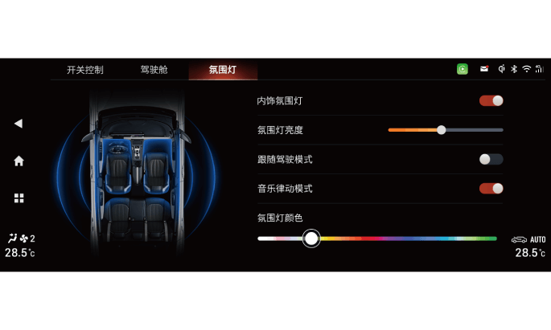

智能氛围灯*
操作界面说明：
氛围灯功能开关
–点击内饰氛围灯软按键，可开启或关闭氛围灯功能。
–在氛围灯功能关闭时其他参数不可调节。
氛围灯亮度调节
–用户可根据个人需求，点击或左右滑动氛围灯亮度进度条调节氛围灯亮度。
跟随驾驶模式
–开启跟随驾驶模式，氛围灯颜色、音乐律动状态与驾驶模式关联，用户可在驾驶模式界面设置每种驾驶模式下对应的氛围灯颜色和音乐律动状态。
音乐律动模式
–开启音乐律动模式，在播放音乐时，氛围灯随音乐节奏进行律动。
氛围灯颜色
–用户拖动或点击颜色条，可选择氛围灯颜色。
氛围灯设置
进入音响主机界面“我的车→氛围灯→跟随驾驶模式”，点击 软按键开启/关闭。
软按键开启/关闭。
–跟随驾驶模式关闭后，用户可在驾驶模式界面调节音乐律动模式或氛围灯颜色。
–跟随驾驶模式开启后，氛围灯颜色和音乐律动开关不可调节。
–当用户调节空调温度升高时，仪表板氛围灯高亮红色数秒后恢复原状态；当用户调节空调温度降低时，仪表板氛围灯高亮蓝色数秒后恢复原状态。
— 页面到底了 —